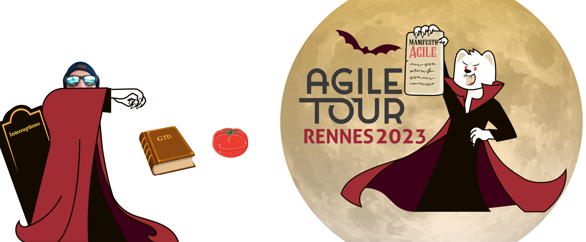
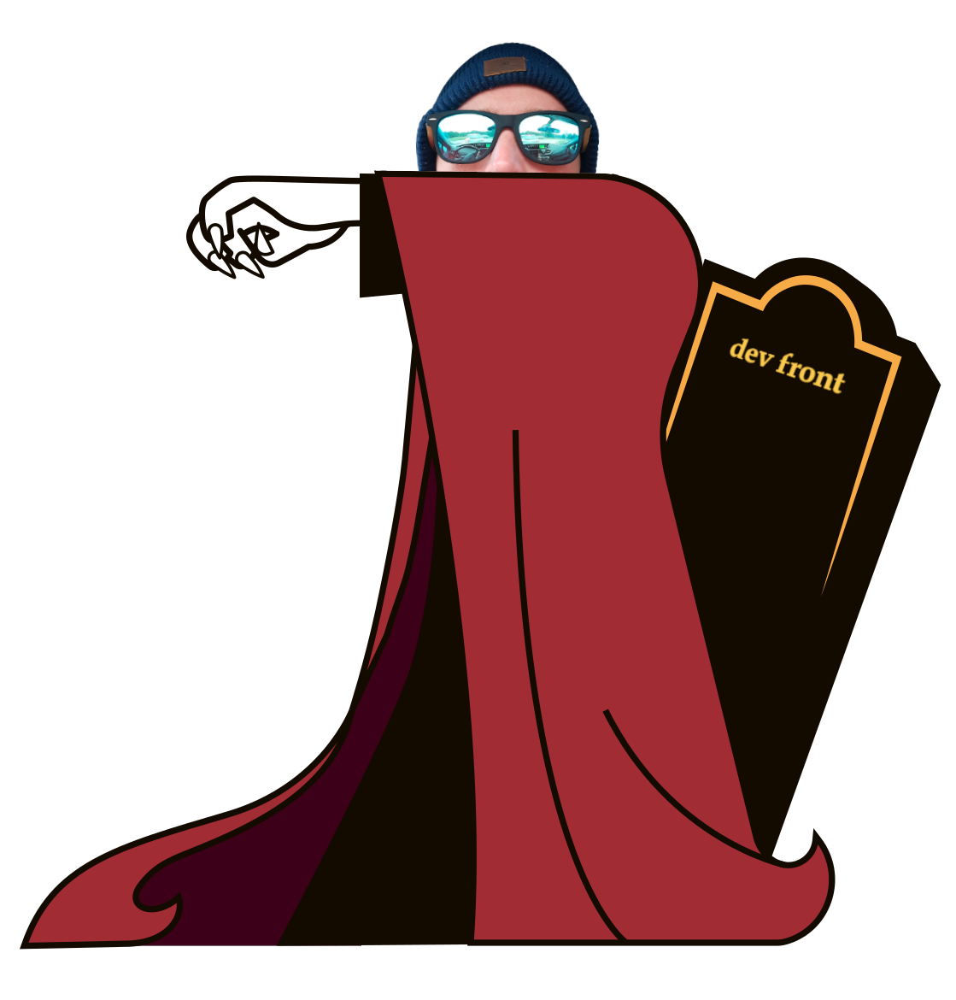
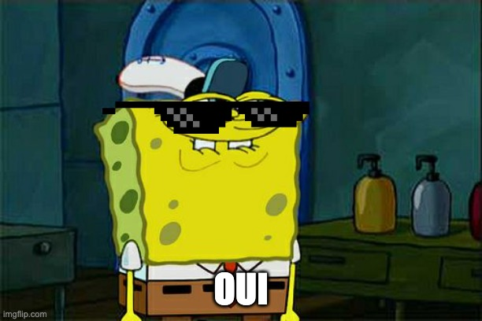
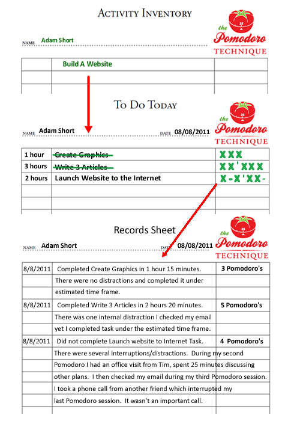

Gérer les interruptions dans mon métier de développeur
🐦 @Zeill45
👔 Humble développeur et co-directeur technique
chez Max
Digital
Services
🤠 On recrute!

Il parle pas d'outils 😨

Anatomie d'une journée type 🔍
⏰ réveil + douche 🚿
🥣🧒🥣🧒🥣🧒 petit dej des enfants
🧛🧛🧛 habiller les troupes
🚲 les déposer en cargo
👔 matinée de boulot
🥪 pause dej
👔 aprem boulot
➕ les aléas, interruptions, urgences
🎯 Objectifs
avancer
ne rien oublier
traiter l'imprévu sans trop de casse
Mes défaults
la mémoire 💾
l'organisation 📑
les interruptions 🤙
Utiliser une/des méthode(s)
Getting Shit Things Done ✔
David Allen
Votre cerveau est fait pour avoir des idées, pas pour les retenir.
Consultant américain et spécialiste de la productivité
Getting Things Done: The Art of Stress-Free Productivity en 2001
Méthode pour
tracer
organiser
suivre
mener à terme
vos tâches
1. collecter/saisir 🖊
il s'agit de consigner les tâches en un seul et même endroit quand elles viennent à l'esprit,
pour ne pas les oublier tout en gardant l'esprit libre.
Collecter tout ce qui sollicite votre attention
Pour se préserver de la distraction de votre esprit, Allen recommande de dresser l’inventaire de
tout ce qui soit prétexte à des préoccupations (pensées, idées, projets, tâches).
2. clarifier 📄
S'assurer que la tâche est bien décrite par une action concrète à mener.
S'il n'y a pas d'action c'est soit à jeter, soit à garder pour référence.
3. organiser 📂
Répartir et découper les tâches en action simples triées par projets, priorités, dates de
réalisation attendue.
4. planifier 📆
Définir l'ordre et la date de mise en œuvre effective de chaque tâche en veillant à la cohérence
de l'ensemble.
5. agir 🔨
Réaliser les tâches planifiées, telles qu'elles ont été planifiées.
Les outils :
n'importe quoi tant que vous l'avez tout le temps avec vous
The Pomodoro Technique 🍅⏰
Francesco Cirillo
La technique Pomodoro est une technique de gestion du temps développée par Francesco Cirillo à
la fin des années 1980. Cette méthode se base sur l'usage d'un minuteur permettant de respecter
des périodes de 25 minutes appelées pomodori (qui signifie en italien « tomates »).
Objectifs :
rester focus le + tps possible dans la journée
🤖
contractualiser les interruptions dès le départ
📲
suivi et amélioration
continue ♻
une boucle de feedback de 25min (1 pomodoro) ou de 2h est acceptable dans 90% des situations
La méthode :
1. piocher une tâche 📃
2. lancer le timer (25min) ⏱
3. bosser jusqu'à la fin du timer (la cocher si elle est terminée) ✅
4. prendre une pause (3-5min) ☕
5. tous les 4 pomodori prendre une longue pause (15-30min) 🏃
Les règles :
un pomodoro est indivisible
quand un pomodoro démarre, il doit sonner
> 5-7 pomodori ==> on divise
inférieur à 1 pomodoro ==> on regroupe
Les outils :
un timer 🍅
du papier ou whatever

simple à mettre en place
du papier et n'importe quel timer et c'est parti
il existe des apps sur tous les supports
tracking des
tâches effectuées
interruptions internes et externes
Le tracking des interruptions externes permet de justifier à son management que
l'on manque de temps et/ou qu'on est trop sollicité.
tout tracer
estimation de + en + précise 📈
négocier le staffing avec le mgt 🤝
tracking précis du nb de pomodoro nécessaires pour finir une tâche
Backlog de la journée préparé ==
on attaque + vite
on code +
- de dispersion
C'est con mais cocher ta todo list c'est gratifiant
2 méthodes complémentaires
GTD est compatible vie pro/perso
Utiliser la méthode pomodoro que pour le boulot ❗
mais les pauses peuvent être utilisées pour avancer dans les tâches quotidiennes.
passer un coup de fil. Faire un démarche
Utiliser ces méthodes permet de décharger son cerveau 🧠
ça demande une certaine discipline au début pour s'y mettre 😅